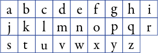

FONDERIE
ROBERT SLIMBACH, qui rejoint Adobe en 1987, commence à travailler sérieusement sur les caractères et la calligraphie quatre ans plus tôt dans le département de dessin de caractères d’Autologic à Newbury Park, en Californie. Depuis lors, il se concentre principalement sur la conception de polices de texte pour la technologie numérique, en s’inspirant de sources classiques. En 1991, il reçoit le Prix Charles Peignot de l’Association Typographique Internationale pour son excellence en conception de caractères. Robert Slimbach dirige désormais le programme de conception de caractères d’Adobe. Il a conçu des polices pour l’International Typeface Corporation, ainsi que pour les familles Adobe Originals Acumin, Arno, Brioso, Caflisch Script, Cronos, Adobe Garamond, Garamond Premier, Adobe Jenson, Kepler, Minion, Poetica, Sanvito, Adobe Text, Utopia, Warnock, Myriad (coconçue avec Carol Twombly), Myriad Arabic, Myriad Hebrew, et la police de l’entreprise Adobe, Adobe Clean.
TEST YOUR FONT

Regular
Bold
Bold
CHARACTER MAP
Capitale

Bas de casse
Ponctuation et chiffre